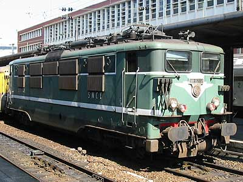
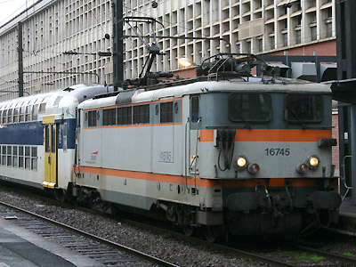
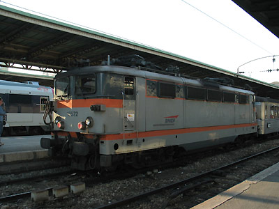
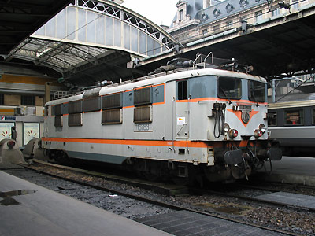
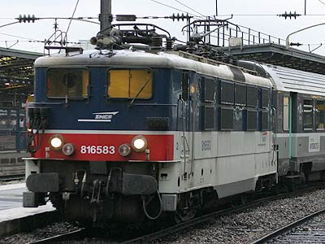
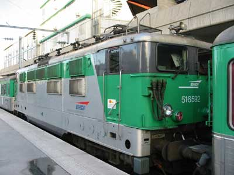
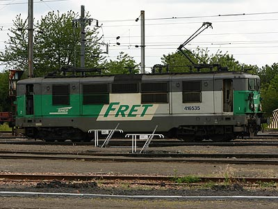
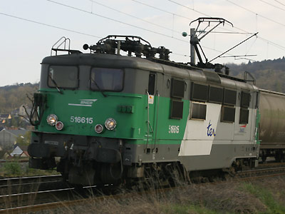

Ferrovia - 05 Juin 2012
BB 16500
Série de 294 locomotives construites de 1958 à 1964. Puissance moyenne et polyvalentes : aptes à l'UM, à la pousse en réversibilité, bogie à double rapport d'engrenage commutable à l'arrêt.
Dernières machines radiées en 2011.
Quelques données techniques
Constructeur : Alsthom
Tension d'alimentation : monophasé 25 kV, 50 Hz
Chaîne de traction : Graduateur linéaire 15 kV, redresseurs ignitrons
Motorisation : 1 moteur à courant continu par bogie
Puissance totale : 2580 kW
Vitesse limite : 140 km/h
Longueur : 14,40 m
Masse : 74t
Pantographes : 2 x AM11
Pour plus d'info :
La fiche BB 16500 sur Wikipedia
Fiche technique des BB 16500 de Florent Brisou
L'inventaire des BB 16500 sur Trains du Sud-Ouest

La BB 16557 à Lille Flandres (24/06/2002)

La BB 16745 petites persiennes miofiltres à Lille (09/12/2007)

La BB 16572 petites persiennes à Paris Est (21/09/2003)

La BB 16783 remonte des rames à Paris Est (08/05/2004)

La BB 16583 IDF effectue des remontes à Paris Est (30/03/2007)

La BB 16592 "Dromadaire" à Paris Nord

La BB 16535 Fret à Lens (11/06/2005)

La BB 16615 Fret, ...enfin TER (03/04/2007)